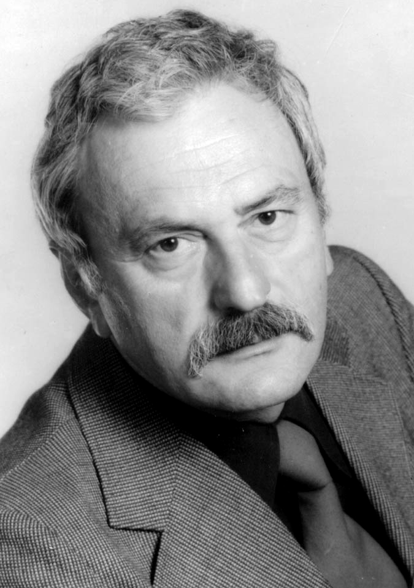
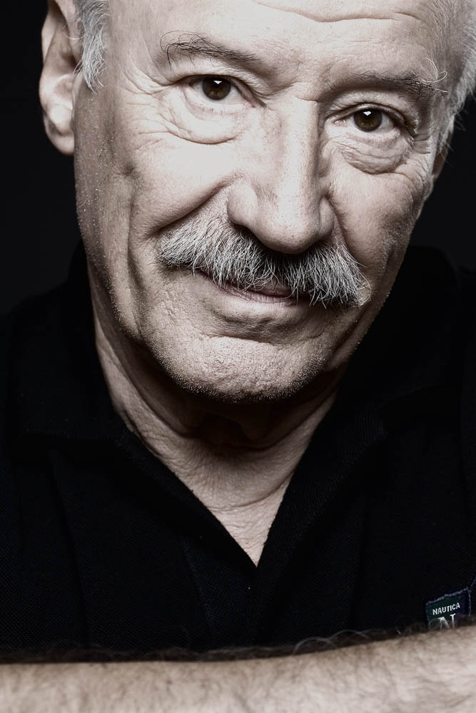

Actori de film
Dragoș Bucur
8.2
Dragoș Bucur este cel de-al treilea român, după Maria Popistașu (2007) și Anamaria Marinca (2008),
selecționat în cadrul prestigiosului program internațional Shooting Stars, din cadrul Festivalului de Film de la Berlin.
Motivația jurului pentru nominalizarea lui Dragoș Bucur în 2010 a fost: „Actorul ne amintește de cântărețul vrăjitor din Hamelin, cel cu fluier fermecat; el se dedică cu atâta intensitate interpretării, încât publicul nu are de ales și trebuie să-l urmeze. Cu enorm de multă precizie, el dă viață conflictelor interioare ale personajelor sale și efectul este fascinant.
Motivația jurului pentru nominalizarea lui Dragoș Bucur în 2010 a fost: „Actorul ne amintește de cântărețul vrăjitor din Hamelin, cel cu fluier fermecat; el se dedică cu atâta intensitate interpretării, încât publicul nu are de ales și trebuie să-l urmeze. Cu enorm de multă precizie, el dă viață conflictelor interioare ale personajelor sale și efectul este fascinant.
Rodica Popescu Bitănescu
8.4
Actrița Rodica Popescu Bitănescu s-a născut la 5 august 1938, în Răsucești, județul Ilfov.
A absolvit Institutul de Artă Teatrală și Cinematografică din București în 1960, la clasa profesorului A. Pop Marțian.
A jucat pe scena Teatrului Național din Iași și la Teatrul Barbu Delavrancea din capitală. Din 1966 până în prezent este actrița Teatrului Național din București.
A absolvit Institutul de Artă Teatrală și Cinematografică din București în 1960, la clasa profesorului A. Pop Marțian.
A jucat pe scena Teatrului Național din Iași și la Teatrul Barbu Delavrancea din capitală. Din 1966 până în prezent este actrița Teatrului Național din București.
Draga Olteanu Matei
7.4
Apreciata actriță de comedie a teatrului și filmului românesc s-a nascut în 24 octombrie 1933, în București,
a absolvit Institutul de Artă Teatrală și Cinematografică "I.L. Caragiale" în 1956 iar în septembrie
același an a debutat în piesa "Ziariștii" de Alexandru Mirodan.
Actrița Draga Olteanu Matei ne-a încântat și ne-a făcut să zâmbim în multe filme, piese de teatru, scenete la emisiuni TV
Poate ca cei mai tineri nu o cunosc prea bine, dar cei care sunt deja adulți își amintesc cu plăcere de dânsa.

Maia Morgenstern
8.0
Maia Morgenstern s-a născut la data de 1 mai 1962 la București în zodia taurului, ceea ce i-a conferit tăria și încăpățânarea
specifică taurilor fără de care nu ar fi reușit. A fost măritată de două ori și are trei copii: Tudor Aaron, Eva Leea Cabiria și Ana Isadora,
care i-au făcut viața mai frumoasă.
Debutul în cinematografie s-a produs în anul 1983, cu filmul Prea cald pentru luna mai, în regia Mariei Callas Dinescu.
Numele său, Morgenstern, în traducere liberă înseamnă "Steaua de dimineață", iar în germană e vorba de Luceafărul de dimineață,
acesta fiind și un alt nume dat Fecioarei Maria, Maicii Domnului, fapt care a contribuit mult la alegerea sa în rolul din "Patimile lui Hristos" - 2004
întrucât regizorul filmului, Mel Gibson, fiind un devotat romano-catolic, a luat și acest lucru în considerare pe lângă originea ei.
Alex Bogdan
7.9
Absolvent al Colegiului Național “C. Negri” din Târgu Ocna, al Universității Hyperion -Actorie,
clasa profesorilor Rodica Mandache şi Eusebiu Ştefănescu (2008). Master în Arta Actorului la UNATC, prof. Gelu Colceag.
Studii de Regie la UNATC, din 2019. Actor la Teatrul Mic din 2017.
Trainer la Festivalul de teatru pentru adolescenți Ideo Ideis.
Șerban Pavlu
8.7
S-a nascut la 29 iunie 1975. În 1997 a absolvit UNATC I. L. Caragiale, clasa prof. Alexandru Repan.
A apărut în rolul Nicu în Terminus Paradis, dar și în cel al regizorului în Cea mai fericită fată din lume.
Dem Rădulescu
8.2
S-a născut la Râmnicu Vâlcea într-o familie de negustori. După terminarea liceului la Râmnicu Vâlcea,
„Bibanul” (poreclă primită în liceu) a trebuit să aleagă între sportul de performanță și actorie.
El a obținut chiar o stea de aur, la un campionat de amatori, la Râmnicu Vâlcea; a luptat în ring la categoria mijlocie.
A debutat ca amator la vârsta de 17 ani, la un bal organizat de fanfara gării.
În 1956 a câștigat premiul I pentru interpretare cu piesa Steaguri pe turnuri (îl interpreta pe „banditul” Rijikov),
la un concurs pentru tineri actori. A fost remarcat de Sică Alexandrescu; practic acesta a fost debutul carierei sale.

Sergiu Nicolaescu
8.1
Sergiu Nicolaescu s-a născut pe 13 aprilie 1930 la Tg-Jiu, in Duminica Floriilor. Este ambițios, perfecționist
și nu renunță la un lucru până nu reușește să îl facă foarte bine. La 5 ani a părăsit Tg-Jiu, familia stabilindu-și reședința
la Timișoara. Acesta este de fapt orașul copilariei lui. De mic copil i-au plăcut filmele și își dorea să joace în ele.
Era șeful unei bande de circa 30 de copii, iar zona lor se întindea de la Spitalul Militar până la podul dintre Cetate si Mehala.
A facut ultimele 4 clase de liceu in 2 ani.
Jean Constantin
8.2
Jean Constantin s-a născut la 21 august 1928 la Techirghiol, în județul Constanța.
A debutat pe scenă la Teatrul de Stat Fantasio, din Constanța, în 1957.
A fost investit drept Cavaler de Malta al Ordinului „Sf. Ioan” de la Ierusalim, în cadrul unui ceremonial
desfășurat într-o sală a Muzeului de Istorie a Bucovinei din Suceava. Jean Constantin e un personaj atât
în viața reală, cât și în filme. „Pata de culoare", cum se autointitulează, fie ca e vorba de Ismail, Parpanghel
sau Somali, din, Roming.
Îi plăcea de mic să spună poezii, iar părinții îl încurajau, mama lui avea voce, iar tatăl lui era comic. Viața
maestrului Jean Constantin a fost muncită, a făcut naveta cu trenul, chiar și cu căruța ca să ajungă la
teatru, dar a depus suflet în tot ce făcea, altfel, maestrul spunea că: "dacă nu trece prin tine, publicul te simte ".
Tamara Buciuceanu-Botez
8.3
Născuta pe 10 august 1929 în Tighina, România (acum Republica Moldova), Tamara Buciuceanu-Botez
a absolvit cursurile Institutului de Artă Teatrală și Cinematografică din București la clasa profesorului Ion
Băltățeanu în 1952, după ce își începuse studiile de actorie in 1948 la Institutul de Teatru „Vasile Alecsandri” din Iași.
Tamara Buciuceanu-Botez reprezintă o imagine plină de viață pentru fiecare generație de spectatori, fiind unul dintre acei actori
fermecați a căror apariție nu poate trece neobservată, fie ca e vorba de scenele marilor teatre din România sau de marele si micul ecran.
Florin Piersic
8.7
Florin Piersic este unul dintre "monștrii sacri" ai cinematografiei românești. S-a născut la Cluj pe data de 27 ianuarie,
fiind un vărsator veritabil adică norocos, ingenios, idealist și foarte atrăgator. Pentru femei, așa cum recunoaște și el,
a fost "actorul care întotdeauna a reprezentat un justițiar, pistolar, macho" fiind un sex simbol bărbatesc.
Pentru regizori era "actorul care putea să joace orice".
În 1941, familia Piersic s-a stabilit la Cernăuți, în timpul Romaniei Mari, tatăl fiind numit acolo medic veterinar-șef al orașului.
La începutul carierei sale era considerat un "june prim" sau un "Făt-Frumos" al cinematografiei autohtone și a jucat în
foarte multe filme românești. Vârful carierei sale este filmul "De-aș fi Harap Alb" din anul 1965, însă rolul prin care
s-a evidențiat a fost Mărgelatul, acest personaj fiind poate cel mai îndragit personaj din cinematografia românească.
Toma Caragiu
8.4
Unul din cei mai mari actori români, cu activitate bogată în teatru, TV și film a interpretat cu precădere
roluri de comedie, dar a excelat și în drame, unul dintre filmele sale de referinta fiind Actorul și Sălbaticii.
Maestrul Toma Caragiu s-a născut la data de 21 august 1925 in satul Aetomilitsa, comuna Konitsa, din Grecia.
Provine dintr-o familie de aromani tatăl său fiind Nico Caragiu și mama sa Atena Papastere Caragiu.
Popa. Debutul însă pe o scenă adevărată se produce în anul 1948, pe scena Studioului Teatrului Național din Piața Amzei, când,
student fiind, în anul III, i se încredințează rolul unui scutier din „Toreadorul din Olmado” în regia
maestrului Ion Sahighian. La 1 mai 1948 este angajat ca membru la Teatrului Național. Iar în 1949, la 24 ani,
obține Diploma de absolvire a I.A.T.C. S-a stins din viață în mod tragic, sub dărâmăturile blocului din București în care locuia,
în urma cutremurului din 4 martie 1977, fiind înmormântat la cimitirul Belu din București.

Amza Pellea
7.3
Înzestrat cu o vocație cinematografică deosebită, el nu este un simplu interpret, ci un creator de
personaje, fie dând viață, credibilitate, forță, individualitate, unor eroi de excepție în situații de excepție,
fie compunându-și un alter ego, întruchipare a olteanului parșiv, isteț, ironic, inventiv, dinamic și plin de farmec.
Amza Pellea a fost unul dintre cei mai importanți actori români, distingându-se atât în teatru cât și în film.
A fost interpretul lui Nea Marin, binecunoscutul personaj de sorginte populară care i-a relevat atât
de bine disponibilitățile pentru comedie.

Victor Rebengiuc
7.0
Victor Rebengiuc (născut la 10 februarie 1933 în București), este un actor român cu o contribuție importantă la
dezvoltarea teatrului și cinematografiei românești. A absolvit UNATC "I. L. Caragiale" București în 1956,
clasa prof. Aura Buzescu și Beate Fredanov. Este membru al trupei Teatrului Bulandra București din 1957.
Joacă însă și în spectacolele altor teatre cum ar fi: Teatrul Național București, Teatrul Mic, Teatrul Național din Cluj Napoca
sau Teatrul Arca.
A fost rector al UNATC "I. L. Caragiale" București în perioada 1990-1996. A fost director al Teatrului Bulandra între anii 1996-1998.
Performanțele sale artistice sunt legate și de importante roluri în teatrul de televiziune și în Teatrul Radiofonic Național.

Sebastian Papaiani
7.2
Sebastian Papaiani a absolvit Institutul de Artă Teatrală și Cinematografică, promoția 1960 și în 1963 debutează în comedia
regizorului Geo Zaizescu Un surâs în plină vară, unde alături de tânăra și frumoasa actriță Florina Luican,
se face remarcat atat de critici cât și de public. Filmează an de an, atât în drame cât și în
comedii și rămâne pentru totdeauna de neegalat în memoria cinefililor în rolurile Plutonier Căpșună din
B.D, Alecu din Astă seară dansăm în familie, Păcală, Pompei din Toamna bobocilor și mai ales Ieremia
din Toate pânzele sus.
Ștefan Mihăilescu Brăila
7.9
Ștefan Mihăilescu-Brăila (n. 3 februarie 1925, Brăila; d. 19 septembrie 1996, București) a fost un actor român, artist emerit.
Ștefan Mihăilescu Brăila a venit pe lume la 3 februarie 1925, la Brăila, mama lui fiind infirmieră.
A urmat cursurile primare și secundare în orașul natal, dedicându-se carierei scenice de timpuriu. Din
1949 până în 1954, Ștefan Mihăilescu Braila a jucat la Teatrul "Maria Filotti". Debutează în cinema în
1957, jucând cu o inegalabilă măiestrie artistică, în cele mai reușite comedii din cinematografia
românească."Bachus" din filmul "Secretul lui Bachus", realizat în 1983 de regizorul Geo Saizescu, a fost
ultimul mare rol al lui Ștefan Mihăilescu Brăila. Ștefan Mihăilescu Brăila a fost și prezentator a numeroase emisiuni de teatru
și divertisment la Radio și Televiziune. Actorul a murit, uitat de cei care l- au aplaudat, dar și de mulți colegi de breaslă,
la 19 septembrie 1996, la București.